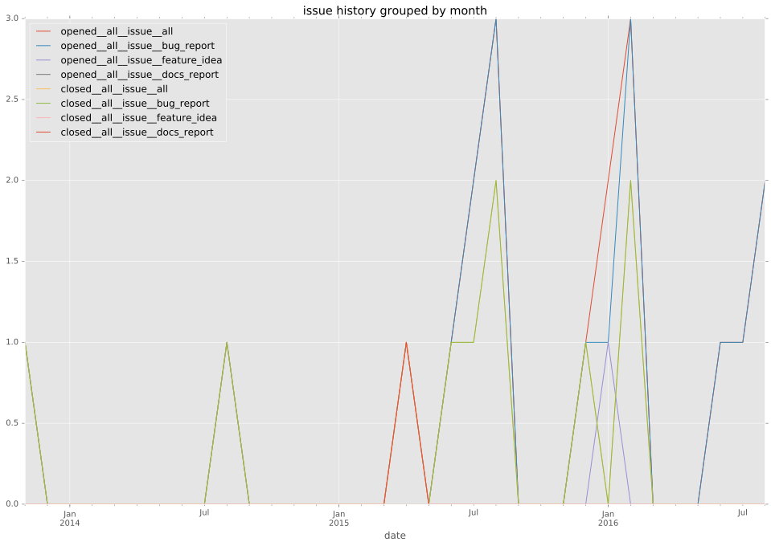
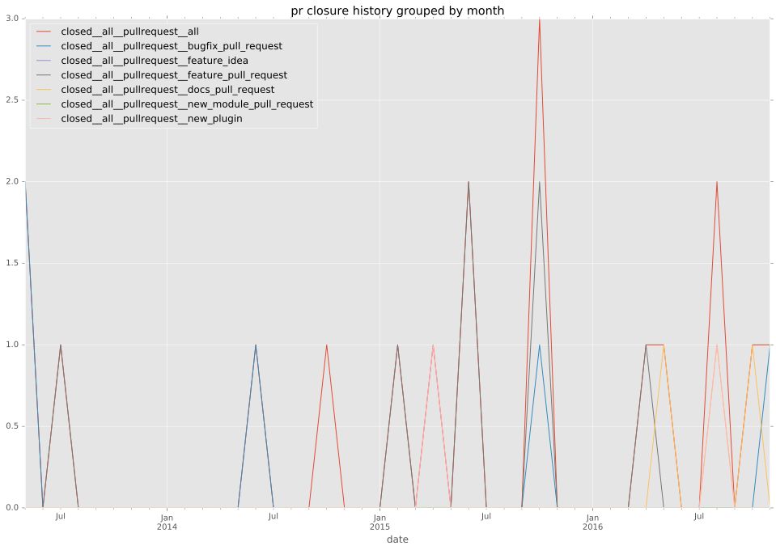

authors
maintainers
- ansible
contributors
- bcoca : 45 commits
- ritzk : 6 commits
- gundalow : 1 commits
- chris-short : 1 commits
total issue counts
feature pull request: 7
docs report: 3
pullrequest: 19
docs pull request: 3
bugfix pull request: 7
feature idea: 1
issue: 17
new plugin: 1
bug report: 14
issue history

pullrequest history

days open by issue type
bugfix pull request
count: 7
std: 1.98805959478
min: 0
max: 4
median: 0.0
mean: 1.57142857143
all
count: 32
std: 19.4997932164
min: 0
max: 109
median: 1.0
mean: 6.875
pullrequest
count: 0
std: nan
min: nan
max: nan
median: nan
mean: nan
docs pull request
count: 4
std: 3.46410161514
min: 0
max: 6
median: 3.0
mean: 3.0
docs report
count: 2
std: 0.0
min: 0
max: 0
median: 0.0
mean: 0.0
feature pull request
count: 7
std: 39.6250281658
min: 0
max: 109
median: 10.0
mean: 19.8571428571
feature idea
count: 0
std: nan
min: nan
max: nan
median: nan
mean: nan
issue
count: 0
std: nan
min: nan
max: nan
median: nan
mean: nan
new plugin
count: 2
std: 0.0
min: 22
max: 22
median: 22.0
mean: 22.0
bug report
count: 10
std: 1.42984070597
min: 0
max: 3
median: 1.0
mean: 1.4
closures grouped by total days open